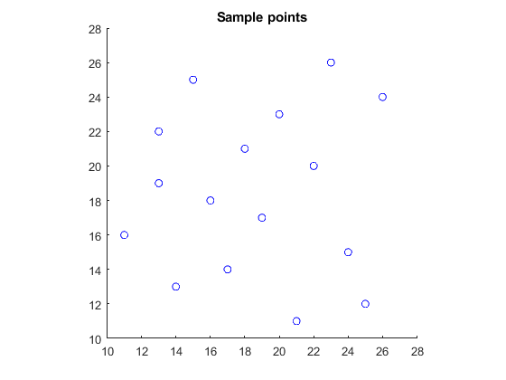
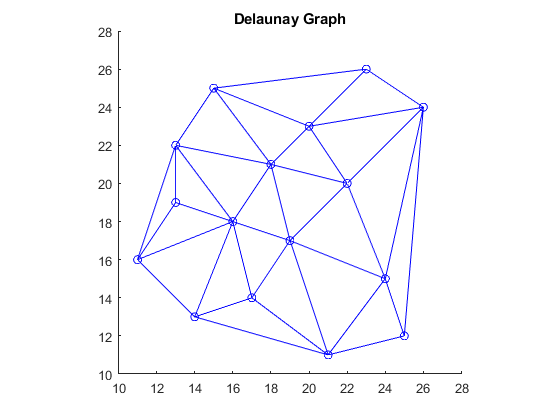
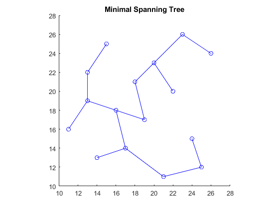
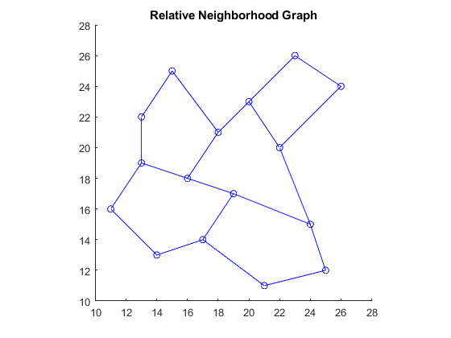
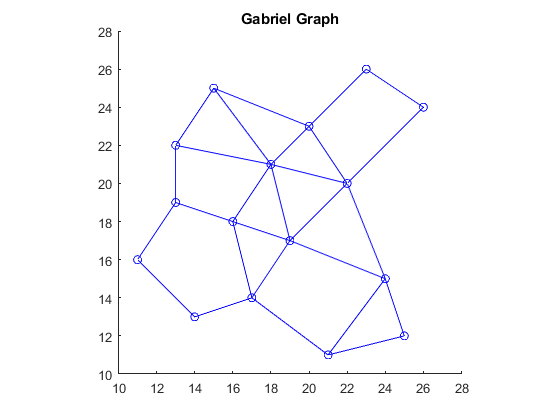

Contents
Read input points
pts = load('sedgewick_points.txt');
figure; axis equal; axis([10 28 10 28]); hold on;
drawPoint(pts, 'bo');
title('Sample points');

Delaunay Graph
[nodes, edges] = delaunayGraph(pts);
figure; axis equal; axis([10 28 10 28]); hold on;
drawPoint(pts, 'bo');
drawGraphEdges(nodes, edges);
title('Delaunay Graph');

Minimal Spanning Tree
edges = euclideanMST(pts);
figure; axis equal; axis([10 28 10 28]); hold on;
drawPoint(pts, 'bo');
drawGraphEdges(pts, edges);
title('Minimal Spanning Tree');

Relative Neighborhood Graph
edges = relativeNeighborhoodGraph(pts);
figure; axis equal; axis([10 28 10 28]); hold on;
drawPoint(pts, 'bo');
drawGraphEdges(pts, edges);
title('Relative Neighborhood Graph');

Gabriel Graph
edges = gabrielGraph(pts);
figure; axis equal; axis([10 28 10 28]); hold on;
drawPoint(pts, 'bo');
drawGraphEdges(pts, edges);
title('Gabriel Graph');
